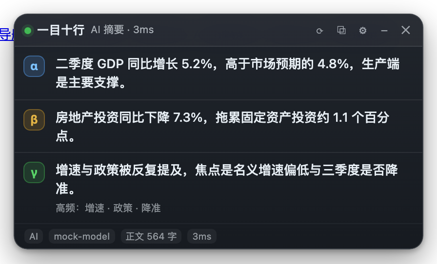

一目十行 · SpeedRead：把整个网页压成 3 条
这是一个 Chrome MV3 扩展。它读整个网页的正文，然后只给你 3 条： α 阿尔法（全文最重要、最先该知道的核心结论）、 β 贝塔（第二关键信息：支撑证据或代价 / 风险 / 限制 / 反面观点）、 γ 人说最多（全页被重复、强调、引用次数最多的议题，附高频词证据）。 摘要由你自己配置的 OpenAI 兼容大模型接口生成；没有 Key 或调用失败时， 自动降级为本地词频 + 句子打分，仍然给满 3 条。 而页面一变就自动重算——不用点任何按钮。
下载 v0.1.0（zip，79,813 字节 / 77.9 KiB，含未压缩源码） 安装与配置 自动更新怎么触发

它和 XrayTun 是什么关系：同一个作者的两个独立项目
本页介绍的是一目十行 · SpeedRead，它是一个浏览器扩展；它与 XrayTun 是同一个作者的另一个独立项目。XrayTun 是 macOS 上的 Xray 图形客户端， 两者不集成、不共享代码、不互相依赖，也不能用其中任何一个去配置另一个。 放在同一个站点上，只是因为它们出自同一作者。
这 3 条分别是什么
面板上永远只有 3 行，多一个字都不显示。三条的分工是写死在提示词里的，模型必须按这个口径回答：
- α 阿尔法 —— 全文最重要的核心结论。它单独就能回答「这页到底在说什么」。 正文里没有依据的结论不许出现。
- β 贝塔 —— 第二关键信息，且与 α 不重复。优先取支撑 α 的证据或数据， 其次取代价、风险、限制、条件、时间点，或反方观点。
- γ 人说最多 —— 全页被重复、强调、引用次数最多的议题。回答「大家反复在说什么」， 而不是「哪条最重要」；同时给出正文里真实出现过的高频词作为证据。
每条默认限 60 字（可在设置里调 16~200），超出就按句读截断；每行默认最多两行，点一下展开全文。 想更绝对，可以在设置页关掉底部的来源/耗时信息与 γ 的证据行 —— 那样面板上就真的只剩 3 行。
怎么用
安装：下载 zip → 解压 → chrome://extensions → 打开开发者模式 →
「加载已解压的扩展程序」→ 选中解压出来的 speed-read-extension/ 目录。
没有上架 Chrome 应用商店，好处是包内就是未压缩的 src/，可以逐行读完再装。
配置模型：首次安装会自动打开设置页。任何 OpenAI 兼容的
/chat/completions 都能用，内置 8 个预设：OpenRouter、OpenAI、DeepSeek、
Moonshot / Kimi、阿里云百炼、硅基流动、智谱 GLM、火山方舟，以及自定义 / 自建网关。
Base URL 只填到 /v1 一级（不要带 /chat/completions），
再填模型名与 API Key，点「测试连接」会真的发一次最小请求并告诉你结果。
面板与快捷键：Alt+Shift+S 显示 / 隐藏面板，
Alt+Shift+R 立刻重新压缩（强制，绕过缓存与变化阈值）。
面板标题栏可拖动、位置会记住；⟳ 重算、⧉ 复制 3 条（含标题与链接）、
⚙ 设置、– 收起、✕ 关闭。点某一行的正文可展开全文。
看不到东西的时候：点扩展图标打开弹窗，底部「诊断」区会直接给出一句结论， 并逐项列出页面类型、内容脚本是否注入、站点访问权限、黑名单、API Key、面板是否被隐藏、 最近一次运行结果。装扩展之前就已经打开的标签页会被自动补注入， 弹窗里也有「补注入到本页」按钮，不需要刷新。
自动更新：页面一变就重算
触发链有 4 路，任何一路命中都会重算，用户不需要点任何按钮：
-
DOM 变化：
MutationObserver盯住整棵文档树，页面静默一段时间后重算， 免得长列表一条条插入时反复触发。 -
SPA 路由：每秒比对一次地址栏（只比字符串，几乎零成本），
配合
popstate/hashchange；路由一变立刻丢掉旧结果重算。 - 切回标签页：从别的标签页切回来时核对一次。
- 兜底轮询：定期比对内容指纹，救那些没有 DOM 变化事件的轮询式页面 （股价、比分、倒计时）。
但页面一直在变，不等于会一直调用模型。三道闸门：
-
内容指纹没变就不发请求。指纹由归一化地址、标题、正文头尾采样与总长组成，
会忽略
utm_*这类跟踪参数，所以同一篇文章的不同入口共享结果。 - 变化太小视为噪声。正文增量不到阈值且比例不到阈值时不重算 —— 时钟、阅读数、广告轮播不会让你花钱；同长度但开头被改写的会额外按开头样本判定为真变化。
- 缓存 + 并发去重 + 限流。同一内容在一段时间内复用结果；同一页面的并发请求合并成一次； 同一个标签页两次真实调用之间有最小间隔。
端到端测试实测的完整链路：首屏 1 次调用 → 改正文 → 自动第 2 次（ 约 0.7 秒内面板就变了）→ 页脚加噪声 → 仍是 2 次 → 同内容新开一个标签页 → 仍是 2 次（命中缓存）。
它是怎么做到的
正文抽取：先按「正文长度 × (1 − 链接密度) × 句读密度 × 标签加成」选一个最佳容器，
把导航、页脚、侧栏整块甩掉；容器阈值随页面长度自适应（短页面正文可能只有一两百字，
固定阈值会选不出容器、退化成「整个 body 都算正文」）；用 div 冒充
nav / footer 的也会按 id/class 丢掉；高链接密度的块视为导航丢弃，
但整页都是链接时（导航站）会关掉过滤重算，宁可带噪音也不返回空结果；
只有内联子元素的 div 当段落处理 —— 所以那些一行 <p>
都没有的 div 汤站点也抓得到。
输入压缩（信息最大化）：正文不会整段丢给模型，而是按信息密度选块 —— 首段无条件保底（导语信息密度最高，纯按分数选会被中段长段落挤掉）、结构标题占位、 其余按分数填满头部，再给结尾留一段（结论总结常在最后），被跳过的部分在提示词里标出省略了多少字。
提示词与容错解析：三条的分工、字数上限、不许编造数字、必须只输出 JSON， 都写在系统提示里；返回的内容容忍 markdown 围栏与前后废话，也能从编号列表里降级解析。 模型输出无法解析时会自动加一轮「只输出那个 JSON」的修复请求；仍然失败就退到本地兜底。
面板与注入：面板挂在 Shadow DOM 里，与宿主页面的 CSS 完全隔离；
样式用 constructible stylesheet 注入，所以连 style-src 'none' 的严格 CSP 站点上
外观也不会丢。模型输出一律用 textContent 写入，绝不 innerHTML，
避免把服务端返回当成 HTML 解析。
验证状态
下面每个数字都来自项目自身的自动化验证，可以在源码里逐条重跑；没有写「应该能」。
- 12 项静态自检：清单是 MV3、权限最小、引用的文件都存在、分发代码里没有 eval / innerHTML / 远程脚本、内容脚本必须是传统脚本、面板硬约束。
- 100 项单元测试（零依赖、离线、毫秒级）：文本度量、输入压缩、提示词、容错解析、本地兜底、大模型客户端（假 fetch 注入，含 401 / 429 / 超时 / 非 JSON 回包）、正文抽取、配置与结构一致性。
- 52 项真实 Chrome 端到端断言：启动真实 Chrome、加载真实扩展、对接本地 mock 网关，全部实跑。
端到端里几条最关键的：
- 页面先开、扩展后装：补注入后无需刷新即出现面板（复现并锁死「装了插件却毫无反应」这个真实故障）。
- 全新安装、还没配 Key：本地兜底给出 3 条，且网络请求为 0 次。
- 改页面正文后面板自动更新：实测 683 毫秒内完成，且第二次提示词用的是新正文。
- 页脚噪声不产生额外调用；同内容第二个标签页命中缓存（调用次数不变）。
- 送给模型的提示词里有正文关键数据、没有导航 / 页脚 / 侧栏 / 页头。
- 严格 CSP 站点（
style-src 'none'）上样式仍然生效；div 汤页面（无<p>）也能抽出正文且导航不进提示词。 - 关掉底部与证据后，面板严格只剩 3 行。
- Service Worker 与页面都没有未捕获异常。
最强的一条是「把用户真正下载到的那份装进真浏览器」：站点分发的
speed-read-extension-0.1.0.zip 就是打包产物本身，解压即加载（顶层目录
speed-read-extension/，27 个文件，含未压缩源码与 MIT 许可证）。
隐私与权限
网页正文会发给你自己配置的那个模型接口，仅此一个地址，没有别的外发。 页面内容会离开浏览器这件事必须说清楚：如果你不接受，可以在设置页关掉「本地兜底」之外的模型调用， 或干脆只用本地兜底（不填 Key）。
API Key 只存在本机（chrome.storage.local），
只由扩展的 Service Worker 读取和发送；内容脚本与网页脚本都拿不到它。所有模型调用都在
Service Worker 里发起（扩展源），因此不受宿主页面 CSP 的 connect-src 限制。
权限只有 4 个：storage（存配置与缓存）、
unlimitedStorage、scripting（补注入用）、
activeTab。扩展不修改页面内容、不上传任何本地文件、
没有统计与上报、不加载远程代码。
不想在某个站点跑：设置页「跳过规则 → 不运行的站点」里每行一个域名，支持
*.bank.com 这样的通配。注意裸域名是子串匹配（写 example.com 时
notexample.com 也会被命中），要精确请用带 * 的写法。
已知边界（用它之前该知道的）
- 只处理
http/https页面；本地file://需要到设置里显式打开。 - 只摘要主框架，不处理 iframe 里的内容；浏览器不允许扩展注入的页面（
chrome://、扩展页、应用商店）本来就不会有任何反应。 - 正文抽取是启发式的（readability 的轻量做法），不保证每个站点都完美；纯图片、纯视频或正文太短的页面会直接提示「正文太短」，而不是硬凑 3 条。
- 中文分词用二元组而不是词典，γ 的高频词提示偶尔会出现跨词边界的片段；γ 本身由模型判定，这个只影响提示质量。
- 有些网关不支持
response_format: json_object，扩展会自动去掉再重试一次，此时靠提示词约束 + 容错解析兜底。 - 「本地兜底」是词频 + 句子打分的抽取式摘要，精度明显低于 AI 摘要；面板底部会明确标注来源是 AI 还是本地兜底。
- 摘要质量取决于你选的模型；同一个页面换模型结论会变，这是模型的性质，不是缓存错乱（换模型会让缓存键失效并重算）。
- 它不是阅读模式：不重排页面、不隐藏广告、不翻译，只给 3 条。
常见问题
它到底做了什么？
读整个网页的正文，只输出 3 条信息：α 阿尔法（全文最重要的核心结论）、 β 贝塔（第二关键信息）、γ 人说最多（全页被重复强调最多的议题）。 它不做阅读模式、不改页面、不翻译，也不替你收藏 —— 只回答「这页在说什么」。
3 条信息是怎么分工的？
α 是单独拿出来就能回答「这页说了什么」的那一条；β 必须与 α 不重复，优先取支撑 α 的证据或数据， 其次取代价、风险、限制、时间点或反方观点；γ 回答的是「大家反复在说什么」，而不是「哪条最重要」， 并给出正文里真实出现过的高频词作为证据。三者的口径写在提示词里，模型必须按这个分工回答。
需要 API Key 吗？没有 Key 还能用吗？
能。填了 Key 走大模型摘要，效果最好；没有 Key、或者调用失败时，会自动降级为本地词频加句子打分， 仍然给满 3 条，只是在面板底部标注「本地兜底」——它的精度明显低于 AI 摘要。 两条路都不需要联网的只有本地兜底那一种，它也完全离线。
我的网页内容会被发到哪里？
只发给设置页里你自己填的那一个模型接口，没有别的外发。Key 只存在本机， 只由扩展的 Service Worker 读取和发送，内容脚本与网页脚本都拿不到它； 扩展没有统计与上报，也不加载远程代码。不希望正文离开浏览器时，不要填 Key。
页面变化很频繁，会不会一直调用模型、一直花钱？
不会。内容指纹没变就不发请求；变化太小（时钟、阅读数、广告轮播）视为噪声不重算； 同一内容在缓存期内复用结果；同一页面的并发请求合并成一次；同一标签页两次真实调用之间有最小间隔。 实测：改正文会触发第二次调用；页脚加噪声不触发；同内容新标签页命中缓存、调用次数不变。
支持哪些浏览器？怎么安装？
需要 Chrome 110+ 或同代内核的 Chromium 浏览器（Manifest V3）。安装是「解压即用」：
下载 zip → 解压 → chrome://extensions → 打开开发者模式 →
加载已解压的扩展程序 → 选中解压出来的 speed-read-extension/ 目录。
为什么面板上永远只有 3 行？
这是刻意的约束：信息最大化的前提是先砍掉「可看可不看」的那些。三条之外不再堆摘要段落， 需要细节时点某一行展开全文，或到弹窗里复制 3 条。想更绝对，可以在设置里关掉底部来源信息与 γ 的高频词证据行 —— 那样面板上就真的只剩 3 行。
有些页面抓不准正文，怎么办？
这一步是启发式的，不保证每个站点都完美。可以做三件事：把弹窗诊断里的结论看一眼（它会告诉你 是正文太短、被黑名单排除、还是内容脚本没注入）；到设置里调整「正文短于此字数就跳过」与 「单次送入模型的正文字数」；对确实不适合摘要的站点，直接加进「不运行的站点」。
为什么有时显示「本地兜底」？
三种情况：还没填 API Key；模型接口报错（Key 无效、模型名不对、限流、超时、网关不支持 JSON 模式）； 模型返回的内容无法解析成 3 条。此时面板底部会标明「本地兜底」，弹窗诊断里能看到具体原因。 不接受兜底可以在设置里关掉它，那样出错就会直接报错而不是降级。
它和 XrayTun 是什么关系？
同一个作者的两个独立项目，不集成、不共享代码、不互相依赖， 也不能用其中任何一个去配置另一个。XrayTun 是 macOS 上的 Xray 图形客户端， 本项目是一个浏览器扩展，两者放在同一个站点上只是因为作者相同。
链接
- 下载 v0.1.0（zip，79,813 字节 / 77.9 KiB，含未压缩源码）
- 许可证全文（MIT）
- English page（与中文页逐段等价）
- XrayTun 主站（同一作者的另一个项目：macOS 上的 Xray 图形客户端）
本项目目前没有独立的代码仓库，源码随 zip 一起分发。
校验提示：解压后顶层目录应为 speed-read-extension/，
manifest.json 里的 version 应为 0.1.0，
目录里应包含 src/、icons/、README.md 与 LICENSE
（tests/ 与 tools/ 刻意不打进分发包）。